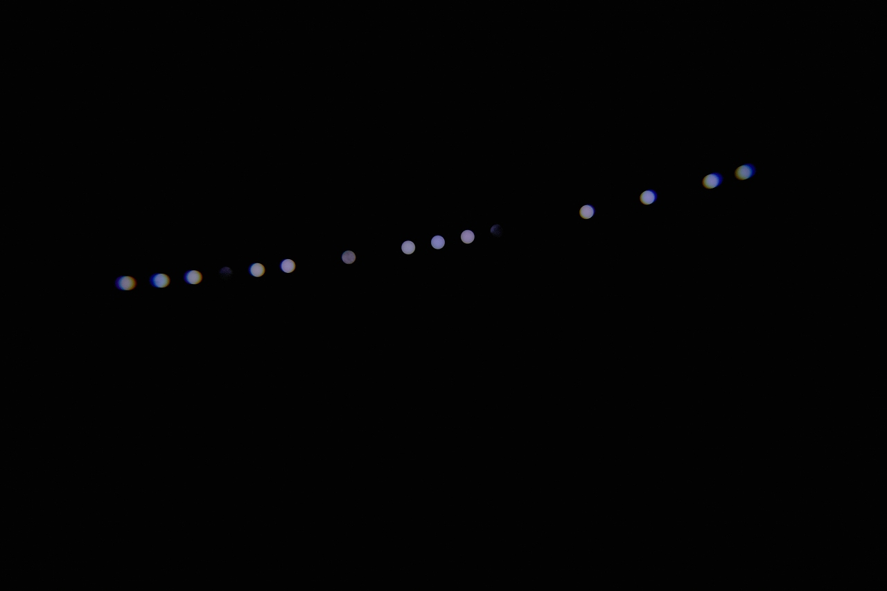
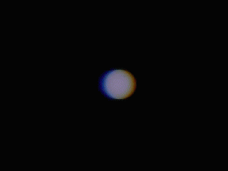
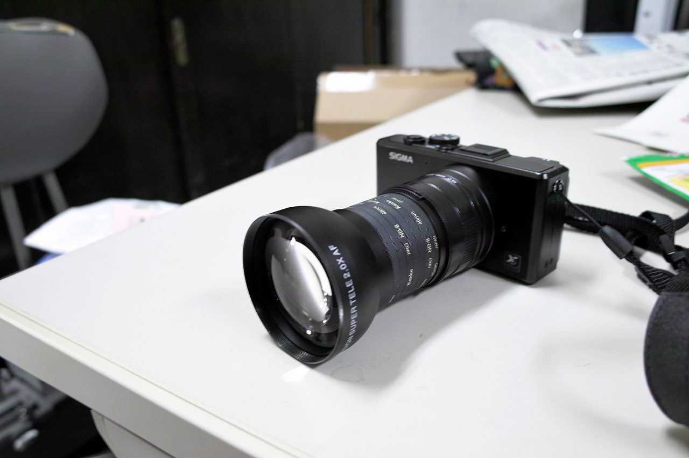

| ・金星の日面通過と粒子画像流速測定法 (H24.06.06) | ||
金環日食の次は金星の日面通過が撮りたくなるものです。朝からお昼まで撮影していると日射しで疲れてしまいます。そこで、カメラを三脚に固定して、5分間隔で自動撮影しました。全て重ねると初めの写真のようになりますが、肝心の金星がわかりません。拡大した絵を切り出してgif画像にすればわかりやすいはず！手動でも頑張れば出来ますがしんどいです。計測研では画像処理をよく行うので、簡単な画像相関法を適用しました。この手法は流体計測に良く用いられています。詳細は粒子画像流速測定法（計測研用語集）を参考にしてください。いやー楽しかったです（助教談）。 |
||
|

画像左右が東西です。ところどころ欠けているのは雲に隠れたためです。左右の像はレンズの収差が影響してますね。 |
||
|

ふらふらしてますが、右斜め上に金星が移動しているのがわかります |
||
|

遮光フィルタの先にテレコンなので、収差がかなり激しくでました。 |
||